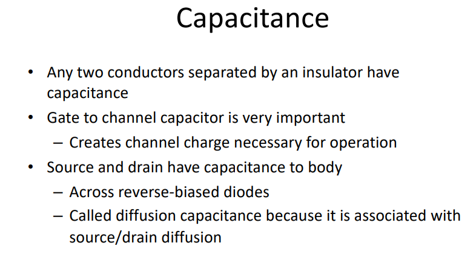
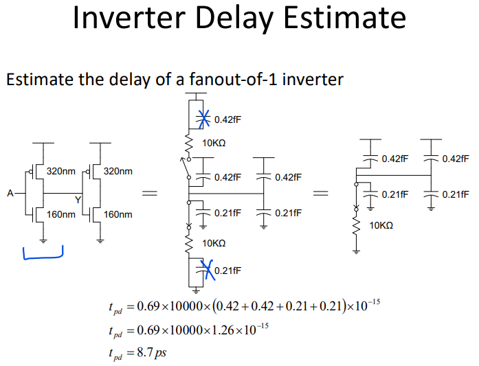
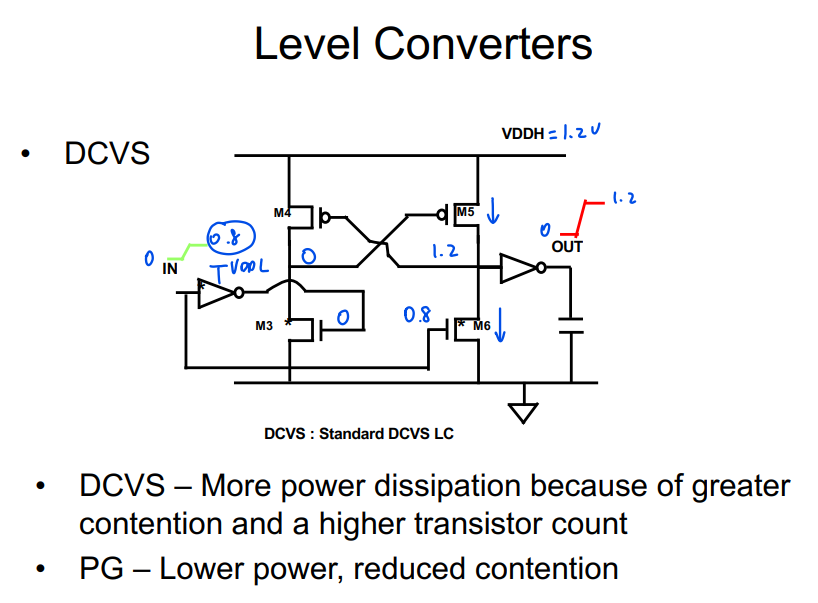
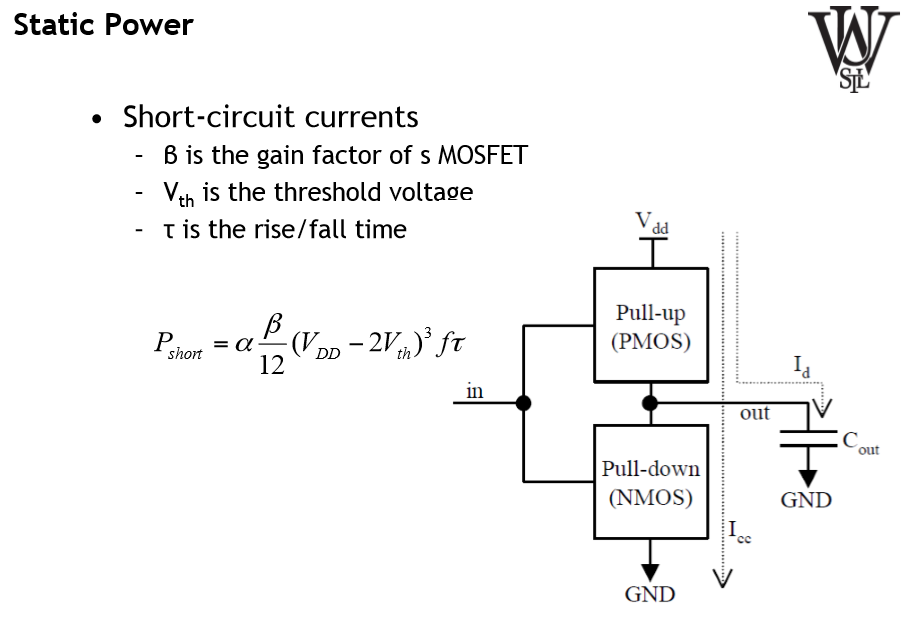
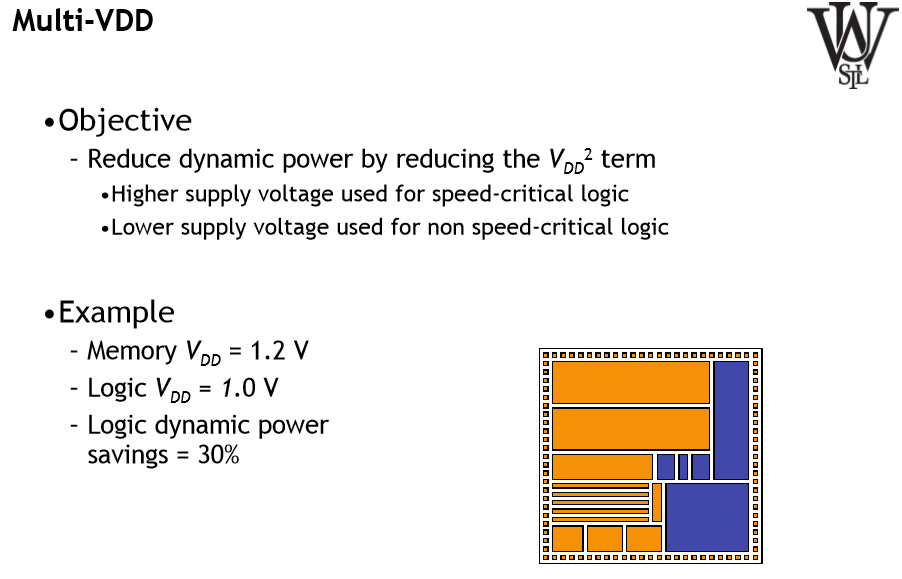

21 Summary - Version 2
21.1 CMOS Basics




Static Logic Families
- Classic CMOS
- Pulse Static CMOS (PS-CMOS)
- Differential Cascode Voltage Switch (DCVS)
- Cascode Non-Threshold Logic (CNTL)
- Pass gate Logic / Transistor gate Logic
- Complementary Passgate Logic (CPL)
- Output Predicion Logic (OPL)
Dynamic Logic Families
21.2 Dynamic Power




21.3 Static Power
Topics:
- Leakage mechanisms
- Subthreshold leakage
- Gate oxide leakage
- Leakage reduction methods
- State assignment
- MTCMOS
- Dual-Vth design
- VTCMOS


Conclusions
- Lots of recent work on circuit and technology techniques to reduce static power
- Standby mode leakage reduction can be orders of magnitude, may lose state, takes time to switch in and out of standby mode
- Active mode leakage reduction is a tougher problem, smaller savings, must be ready for inputs to toggle at any time
21.4 Interconnects


21.5 More Notes:




